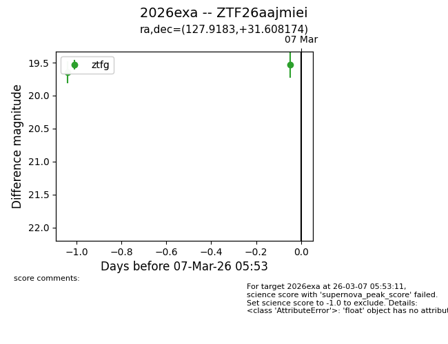
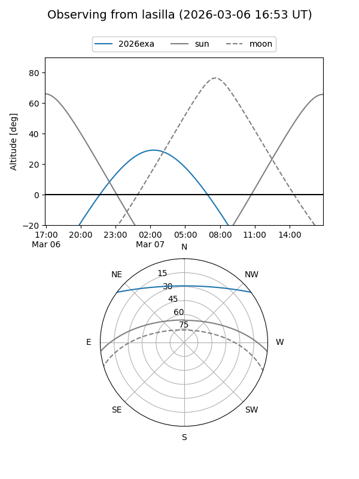
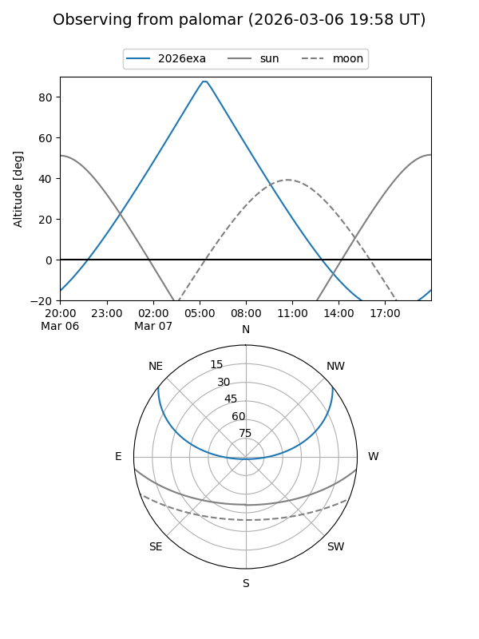
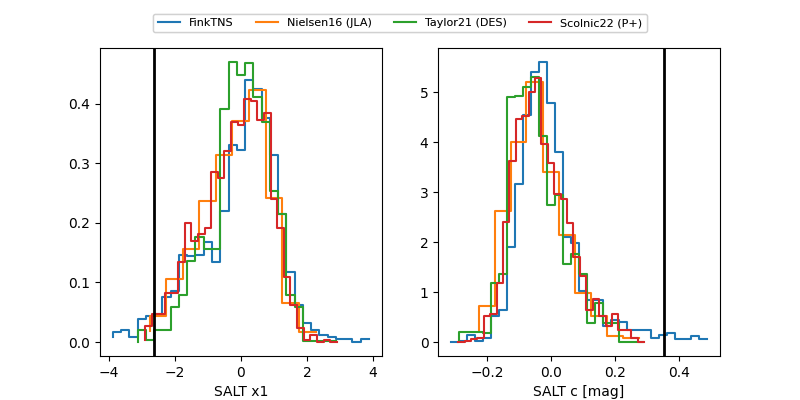

2026exa
Target 2026exa at 2026-03-07 05:54
Aliases and brokers:
FINK: link
Lasair: link
ALeRCE: link
TNS: link
YSE: link
alt names
ZTF26aajmiei (ztf,fink_ztf)
2026exa (tns,yse)
Coordinates:
equatorial (ra, dec) = 127.9183,+31.60817
equatorial (HMS+DMS) = 08:31:40.40,+31:36:29.43
galactic (l, b) = (191.5561,+34.05703)
Flags:
Photometry:
last ztfg=19.53
2 ztfg detections
Lightcurve

Visibility


Additional plots
